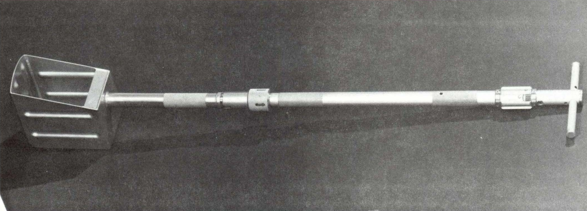
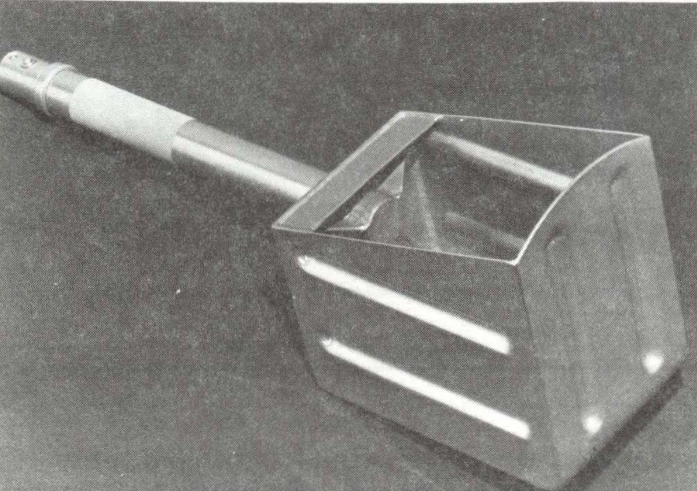

LARGE BOX-SHAPED SCOOP
Apollo 11, 12, & 14 Missions
Description
The large box-shaped scoop was used for collecting soil samples on the moon and was also used for trenching. The head of the scoop was rigidly mounted to a shaft, which could be attached to an extension handle. A rotating motion was used with this model of scoop to prevent soil from flying out of the pan. Scoops of this type were used on the Apollo 11, 12, and 14 missions.
Physical Attributes
-
Weight
400 g
-
Dimensions
39 cm overall length
15.2 cm box height
9.3 cm box width
15.2 cm box depth -
Materials
The pan structure (box-shaped portion) was made of aluminum alloy 6061. A stainless steel wire mesh sieve was designed to cover the pan opening, but no evidence was found of fabrication or use of the mesh.
-
Manufacturer
NASA, Johnson Space Center
Images
-

Large, box-shaped scoop attached to shorter model extension handle
(NASA photo S69-31583) -

Box-shaped scoop (NASA photo S69-31846) -

Astronauts practice using large, box-shaped scoop to fill sample bag wilh soil in simulated lunar settmg
(NASA photo S69-32243)